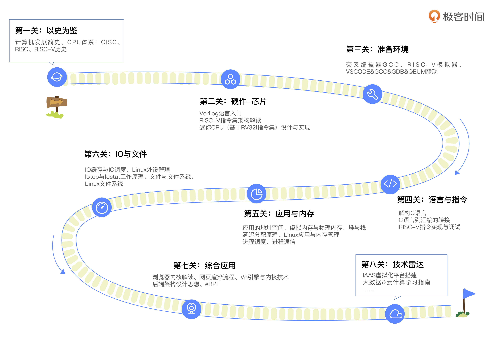

- 00 开篇词 练好基本功，优秀工程师成长第一步.md.html
- 01 CISC & RISC：从何而来，何至于此.md.html
- 02 RISC特性与发展：RISC-V凭什么成为“半导体行业的Linux”？.md.html
- 03 硬件语言筑基（一）：从硬件语言开启手写CPU之旅.md.html
- 04 硬件语言筑基（二）_ 代码是怎么生成具体电路的？.md.html
- 05 指令架构：RISC-V在CPU设计上到底有哪些优势？.md.html
- 06 手写CPU（一）：迷你CPU架构设计与取指令实现.md.html
- 07 手写CPU（二）：如何实现指令译码模块？.md.html
- 08 手写CPU（三）：如何实现指令执行模块？.md.html
- 09 手写CPU（四）：如何实现CPU流水线的访存阶段？.md.html
- 10 手写CPU（五）：CPU流水线的写回模块如何实现？.md.html
- 11 手写CPU（六）：如何让我们的CPU跑起来？.md.html
- 12 QEMU：支持RISC-V的QEMU如何构建？.md.html
- 13 小试牛刀：跑通RISC-V平台的Hello World程序.md.html
- 14 走进C语言：高级语言怎样抽象执行逻辑？.md.html
- 15 C与汇编：揭秘C语言编译器的“搬砖”日常.md.html
- 16 RISC-V指令精讲（一）：算术指令实现与调试.md.html
- 17 RISC-V指令精讲（二）：算术指令实现与调试.md.html
- 18 RISC-V指令精讲（三）：跳转指令实现与调试.md.html
- 19 RISC-V指令精讲（四）：跳转指令实现与调试.md.html
- 20 RISC-V指令精讲（五）：原子指令实现与调试.md.html
- 21 RISC-V指令精讲（六）：加载指令实现与调试.md.html
- 22 RISC-V指令精讲（七）：访存指令实现与调试.md.html
- 23 内存地址空间：程序中地址的三种产生方式.md.html
- 24 虚实结合：虚拟内存和物理内存.md.html
- 25 堆&栈：堆与栈的区别和应用.md.html
- 26 延迟分配：提高内存利用率的三种机制.md.html
- 27 应用内存管理：Linux的应用与内存管理.md.html
- 28 进程调度：应用为什么能并行执行？.md.html
- 29 应用间通信（一）：详解Linux进程IPC.md.html
- 30 应用间通信（二）：详解Linux进程IPC.md.html
- 31 外设通信：IO Cache与IO调度.md.html
- 32 IO管理：Linux如何管理多个外设？.md.html
- 33 lotop与lostat命令：聊聊命令背后的故事与工作原理.md.html
- 34 文件仓库：初识文件与文件系统.md.html
- 35 Linux文件系统（一）：Linux如何存放文件？.md.html
- 36 Linux文件系统（二）：Linux如何存放文件？.md.html
- 37 浏览器原理（一）：浏览器为什么要用多进程模型？.md.html
- 38 浏览器原理（二）：浏览器进程通信与网络渲染详解.md.html
- 39 源码解读：V8 执行 JS 代码的全过程.md.html
- 40 内功心法（一）：内核和后端通用的设计思想有哪些？.md.html
- 41 内功心法（二）：内核和后端通用的设计思想有哪些？.md.html
- 42 性能调优：性能调优工具eBPF和调优方法.md.html
- 先睹为快：迷你CPU项目效果演示.md.html
- 加餐01 云计算基础：自己动手搭建一款IAAS虚拟化平台.md.html
- 加餐02 学习攻略（一）：大数据&云计算，究竟怎么学？.md.html
- 加餐03 学习攻略（二）：大数据&云计算，究竟怎么学？.md.html
- 加餐04 谈谈容器云与和CaaS平台.md.html
- 加餐05 分布式微服务与智能SaaS.md.html
- 国庆策划01 知识挑战赛：检验一下学习成果吧！.md.html
- 国庆策划02 来自课代表的学习锦囊.md.html
- 国庆策划03 揭秘代码优化操作和栈保护机制.md.html
- 温故知新 思考题参考答案（一）.md.html
- 用户故事 我是怎样学习Verilog的？.md.html
- 结束语 心若有所向往，何惧道阻且长.md.html
- 捐赠
00 开篇词 练好基本功，优秀工程师成长第一步
你好，我是彭东，网名LMOS。很高兴在极客时间和你相遇，一起开启计算机基础的修炼之旅。
先来介绍一下我自己。我是 Intel 傲腾项目开发者之一，曾经为 Intel 做过内核层面的开发工作，也对 Linux、BSD、SunOS 等开源操作系统，还有 Windows 的 NT 内核很熟悉。
这十几年来，我一直专注于操作系统内核研发。先后开发了LMOS（基于x86_64的多进程支持SMP的操作系统）和LMOSEM（基于ARM32，支持软实时的嵌入式操作系统），还写过《深度探索嵌入式操作系统》一书。去年5月份，我在极客时间上更新了《操作系统实战45讲》这个专栏，和你分享了我多年来开发操作系统的方法和经验。
通过课程的互动交流，我发现很多同学因为基础知识并不扎实，所以学操作系统的时候非常吃力。而计算机的基础知识，不但对于深入理解操作系统有帮助，对我们工程师的技术提升也是一门长期收益的必修课。
打牢计算机基础有什么用？
就拿我的亲身经历来说，我既做过前端、后端的工作，也做过内核的开发。出现Bug和故障的时候，我总能快速理清排查思路，选用合适的工具、技术来分析问题，高效Debug；一个项目摆在我面前，迅速分析出项目的痛点、难点，整理出实现功能需要哪些技术框架也是驾轻就熟。
很多同事跟朋友对这样的能力心向往之，好奇我有什么“秘诀”。其实，能来回穿梭于底层与高层之间，不至于手忙脚乱，我最大的依仗就是深厚的计算机基础。
无论你是计算机初学者，还是已经工作了几年的老同学，对于“打牢基础很重要”、“基础不牢、地动山摇”这样的话，估计耳朵都要听得磨出茧子了。但到底计算机基础威力有多大呢？
举个例子，就像你编写你人生的第一个程序——Hello World。这个程序非常简单，同时也非常复杂，简单到你只要明白调用函数“printf(“Hello World\n”);”，就能在屏幕上打印出Hello World的字符；难的是这个程序的背后细节，尽管这个程序不过数行代码，却需要芯片、编程语言、进程、内存、IO等多种基础设施的配合，才能完成看似简单的功能。
当然在写Hello World程序这个起步阶段，我们只要知道printf函数如何使用就行了，这是因为这程序简单到只是输出Hello World就结束了，不会给系统或者其它软件带来副作用。
但若是我们要开发大规模应用系统，如电商服务系统，问题就会变得复杂。比如：
- 这个服务应用要用什么语言来编写？-
- 是采用单体进程，还是用多个进程来协同工作？-
- 如何管理长期使用的内存空间？如何避免系统IO抖动？-
- 如何处理网络带来的各种问题，比如通信拥堵、拒绝请求，甚至掉线？
这些问题，显然不是我们知道这些方面的几个接口函数就能解决的。发现没有？你可以用很短的时间跑起来一个Hello World，但想保障一个电商系统运转如常，感觉难度上是天壤之别。工程复杂度带来的差异，让我们不得不继续钻研，试着“理解”计算机。
我再说一个MySQL的例子：在往生产数据库中导入部分数据时，会造成客户端的访问超时。你可能怀疑这是MySQL自身问题，也可能怀疑是服务器系统的问题。其实两者都不是，此时即使你对MySQL的各种操作都了然于胸，还是对解决这类问题一头雾水。
如果你没能掌握文件系统、Cache、IO等基础的话，就很难想到用iotop、iostat等工具去查看IO操作，也就无从发现MySQL在导入数据时还会产生大量的日志，而这些日志也需要存盘引发大量IO操作，导致IO带宽爆满，造成访问超时。更不用说想到可以用MySQL的innodb_flush_log_at_trx_commit来控制MySQL的log行为了。
再比方说，如果你不知道操作系统与CPU、RAM等硬件的交互原理，就很难理解JVM为啥要抽象出堆、虚拟机栈和本地方法栈、程序计数器、方法区之类的概念来屏蔽硬件差异，更别说理解JVM、JUC中的内存管理、多线程安全的核心设计思想了。你看，写不出高并发、安全可靠程序的瓶颈，深究起来欠缺的竟然是底层基础知识。
除了复杂的软件工程问题，日新月异的前沿技术也离不开计算机基础的软硬件知识。
系统设计领域，只有研究过对CPU提供的SIMD指令集，才会联想到可以像ClickHouse一样基于向量化执行来提升计算速度；在云原生方面，只有熟知文件系统的系统调用和运作原理，才能设计出一款优质的分布式文件系统，或者设计出基于UnionFS的Docker 镜像机制，让容器真正发挥优势；AI领域同样如此，只有透彻理解了语言与指令、内存与应用，才有可能通过基础的软硬件技术配合优化存储层次，最终调优加速AI框架……
总之，想要成为优秀工程师，就需要你深入芯片、内存、语言、应用、IO与文件等这些基础组件学习研究，甚至还要钻研语言指令的运转，搞懂芯片尤其是CPU的机制原理。这些基础，不仅仅是对计算机本身很重要，对从事计算机的任何细分行业的每个人都很重要。
计算机基础要怎么学？
也许你跟我一样，不是计算机专业科班出身，所以起步时更加步履维艰。通常被后面这几类问题困扰：不确定学什么，不知道怎么学，硬记了概念不明白技术原理，更别说学以致用了。
这些问题让我们面对内容繁多的计算机知识时，不知如何下手，于是开始自我怀疑，总想打退堂鼓。从只会用C写个Hello World，到可以用C语言自研操作系统内核，我同样经历了漫长的修炼之旅。我也遇到过各种各样的问题，通过不断地学习和实践，才解决了诸多疑难杂症。
我希望把自己积累的大量计算机学习基础方法经验，通过这门课分享给你，帮你把计算机从底层到应用的关键知识点串联起来。除了学习原理概念、理顺知识点，动手实践的环节也不可或缺，配套的执行和调试代码，我之后都会放在Gitee上方便你随堂练习。

这个专栏我是这样安排的：
历史
一个东西，从何而来，何至于此，这就是历史。学计算机基础，我们需要先学习它的历史，学习计算机是怎么一步步发展到今天这个样子的，再根据今天的状况推导出未来的发展方向。
我并不会长篇累牍地给你讲什么编年史，而是重点带你了解可编程架构是怎么创造出来的、CPU从何而来、CISC和RISC又各有什么优缺点。知道了这些，你就能理解为什么现在国家要提倡发展芯片产业，RISC-V为何会大行其道。
芯片
万丈高楼从地起，欲盖高楼先打地基。芯片是万世之基，这是所有软件基础的开始，执行软件程序的指令，运算并处理各种数据都离不开它。
因此，了解芯片的工作机制对写出优秀的应用软件非常重要。为了简单起见，我选择了最火热的RISCV芯片。这个模块里，我们将一起设计一个迷你RISCV处理器。哪怕未来你不从事芯片设计工作，了解芯片的工作机制，也对写出优秀的应用软件非常重要。
环境
学习讲究“眼到，手到，心到”，很多知识如果想牢牢掌握，就离不开动手实践。
而搭建好编译环境和执行环境就是实践的前提，方便后面的学习里我们去调试程序，验证理论。环境篇我们最终会跑出RISC-V平台的Hello World程序，作为这一关的阶段性成果。
语言
一个合格的程序员必须要掌握多种编程语言，这是开发应用软件的基础，所以我选择了最常用的C语言，以它为例让你理解高级语言是如何转换成低级的RISCV汇编语言的。
我不光会带你学习C语言各种类型的形成、语句与函数的关系，还会给你搭建一座理解C和汇编对应关系的桥梁。汇编语言方面，我会以RISC-V为例，介绍其算术指令、跳转指令、原子指令和访存指令，并带你学会调试这些指令，加深你对指令的理解。
应用
具备了编程语言的知识基础，我们就可以开发应用了。应用往往与内存分不开，我们一起来了解应用的舞台——内存地址空间，接着会引入物理内存、虚拟内存。理解了内存，理解进程也会手到擒来。
虚拟内存跟物理内存如何映射和转换？应用堆和栈内存有什么不同？应用内存是如何动态分配的？为什么操作系统中能并行运行多个不同或者相同的应用？多个应用之间如何通信？这些重难点问题，我们一个都不会漏掉。
IO
跟软件应用直接关联的，除了芯片和内存之外，就是IO即输入输出系统了。无论是交互式应用、还是数据密集型应用，都不得不接收各种数据的输入，然后执行相应计算和处理之后产生输出。
有的应用性能不佳，实时性不强，更有甚者丢失数据，面对这些令人头疼的问题，不懂IO就无法处理。我们想要开发高性能的应用程序，就不得不学习IO相关的基础知识了。因此，我们会重点学习IO的操作方式、IO调度、IO缓存Cache，以及Linux操作系统是如何管理IO设备的。我还会引入iotop和iostate工具，带你掌握怎么用它们来攻克应用的IO性能瓶颈。
文件
很少有应用不需要储存读写文件的，特别是各种网络应用和数据库应用，一个合格的开发者必须对文件了如指掌。
想要提升应用读写数据性能，做好数据加密（特别是优化网络数据库应用），深入了解文件和文件系统都是相当关键的。理清文件的基础知识点之后，我们还会研究一个Linux文件系统实例的内部细节，检验之前所学。
综合应用
经历了前面这些关卡，在综合应用篇里，我会带你了解如何从底层角度审视前端技术跟后端架构。优秀工程师通常具备超强的知识迁移能力，能够透过各种多变的技术表象，快速抓住技术的本质。这将是你未来拓展学习更多应用层技术，顺利解决日常业务里前后端性能问题的良好开端。
技术雷达
最后，我还设置了技术雷达的加餐内容，和你聊聊云计算、大数据跟智能制造。这些热门领域其实都是对基础技术的综合应用，有助于你开阔视野，给工作选择增加更多可能性。
这个加餐，我安排在正文结束之后的一个月和你见面（每周更新一节课，共五节课），这一个月是留给你吸收消化前面所学内容的时间。
总之，在你学习更多应用层技术以前，通过这门课补充前置知识很有必要。这既是所有有志于成为高手的工程师绕不开的必修内容，同样也是我多年职业生涯里，通过技术修炼沉淀而来的“学习笔记”。
在我看来，一个人的自我学习能力和态度决定着技术成就，不然只会陷入CRUD Boy或者API Caller的圈子里，终日忙忙碌碌却依旧原地踏步。IT人就是要时刻保持学习，如果要给这个保持学习的习惯加个期限，那就是“终身”。
© 2019 - 2023 Liangliang Lee. Powered by gin and hexo-theme-book.